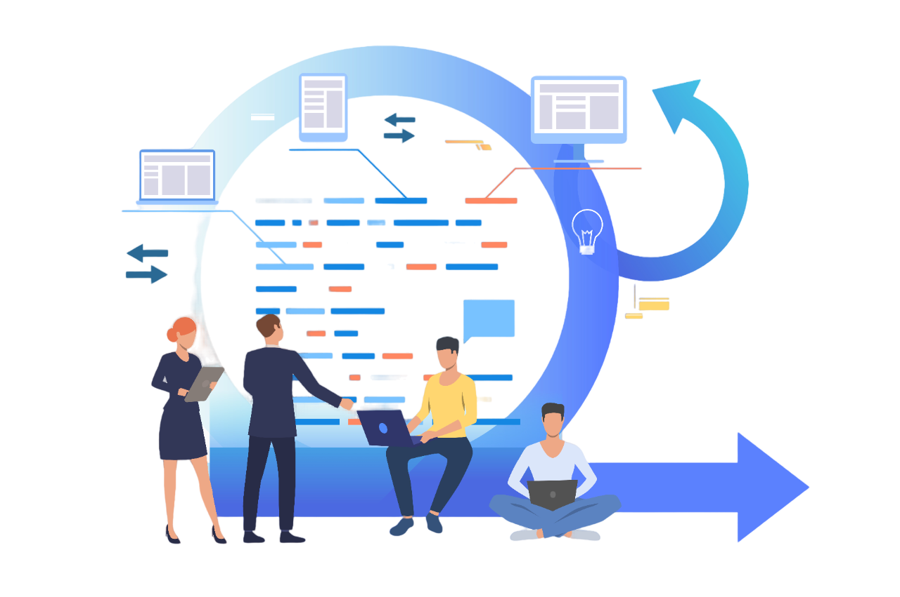

Product Owner:
Dono do projeto e líder do processo como um todo, toma as decisões e avalia os recursos, ele também define o esperado de cada membro e o objetivo do projeto!

Scrum Master:
Auxilia a equipe na solução de problemas, por conhecer bem sobre o funcionamento do Scrum é uma função importantíssima dentro do projeto afastando tudo aquilo que pode atrapalhar o desenvolvimento das sprints do projeto!

Time Scrum:
São todos aqueles que desenvolvem o projeto, atuando em colaboração e sempre se autogerenciando a respeito de atividades e metas do projeto!
